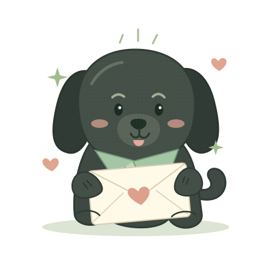

a little sorry, a lot of love.
宝宝，小黑在！

正在认真听宝宝说话
你的每一声，都值得被回应。
有点笨拙，但每一步都是真心的
A SMALL JOURNEY FOR US
把没回应的那几声，
变成好多句「我在」。
- 01回应你的每一声这次，一声都不漏
- 02拼好我的真心把喜欢放进小事里
- 03给宝宝的悄悄话有些话，想认真说
第一关 / LISTEN & RESPOND宝宝一喊，
 小黑已就位，耳朵认真营业中
小黑已就位，耳朵认真营业中
宝宝一喊，
小黑就到。
如果那段视频可以重来，
我想这样回应你。
点一下回复，把「我在」送给宝宝。
我的宝宝 Kali 这一次，好好听你说
每一声，都接住了 ♡
第二关 / LITTLE PROMISES真心不只在话里，
真心不只在话里，
也在每件小事里。
小黑准备了四个小约定。
点开每一块，把这颗心慢慢拼完整。
0/ 4 份认真
每点开一块，就收好一个约定。
四个小约定，慢慢打开就好。
第三关 / WORDS FROM MY HEART有一封信，
有一封信，
小黑想亲手交给你。
轻轻点开，里面装着我的认真。
FOR MY DEAREST KALI
亲爱的宝宝：
那天我们打视频，你喊了我好几次，我都没有回应。后来意识到这件事，我真的很懊恼。对不起，宝宝。
你喊我的时候，应该得到一句及时的「我在」，而不是一次又一次等不到回应。无论我当时在忙什么，都该先告诉你，而不是让你觉得自己被晾在一边。
我做这个小网站，是想认真向你道歉。刚才的几个小约定，我也想带到以后的每一次视频、每一次相处里，用行动慢慢做到。
我希望还能做你喜欢的那只小黑，但我知道，原谅不是玩完一个游戏就要交出的答案。你可以继续生气，可以告诉我你的委屈，也可以再给自己一点时间。我会认真听。
宝宝，下次你喊我，
我想让你听见：「我在呢。」
一直想好好陪着你的小黑
如果你愿意，可以告诉小黑现在的心情。
没有标准答案，你的感受最重要。这里的选择不会自动发送。心意留在这里，选择一直在你手里。
不是闯关换原谅，只是想把真心慢慢给你看。
你不用一下子就开心起来。
小黑会学着，把喜欢变成让你安心的小事。